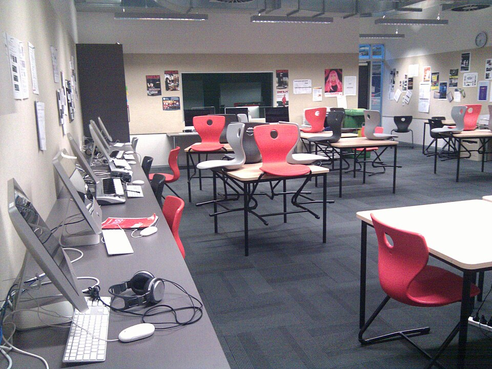

학교 미디어 교실 (이미지) · 사진: Mosborne01 / Wikimedia Commons, CC BY-SA 3.0
국제학교 노트북·태블릿(BYOD·1:1 기기) — 학교가 정해 주는 것과 집이 정해야 하는 것
1. 먼저 — 학교가 쓰는 방식은 보통 네 가지입니다
이름은 학교마다 다르게 부릅니다(1:1 프로그램 · BYOD · BYOT · 디지털 러닝 등). 내용으로 보면 대개 아래 넷 중 하나입니다.
· ① 학교 지급(1:1) — 학교가 기기를 나눠 주고 관리합니다. 집에서 따로 살 것이 없는 대신, 학기 말에 반납하거나 비용이 학비에 포함되는 형태가 많습니다.
· ② 가져오기 + 지정 모델·운영체제 — 집에서 사되 어떤 종류를 사야 하는지 학교가 정해 줍니다. 가장 흔한 방식입니다.
· ③ 가져오기 + 자유 — 최소 조건(예: 키보드가 달려 있을 것, 배터리가 하루를 버틸 것)만 제시하고 기종은 가정에 맡깁니다.
· ④ 교내 공용 — 개인 기기 없이 교실 공용 노트북·태블릿이나 컴퓨터실을 씁니다. 저학년에서 많습니다.
그래서 입학 안내문을 받으시면 기기 항목부터 찾으세요. 없으면 입학처에 세 가지만 물으면 됩니다. 학교가 주는지 가져가는지 · 지정 모델이나 운영체제가 있는지 · 언제까지 준비하면 되는지.
2. 한국 학교와 무엇이 다른가
| 항목 | 한국 학교에서 익숙한 방식 | 국제학교에서 흔한 방식 |
|---|---|---|
| 기기의 위치 | 보조 도구 — 없어도 수업이 됨 | 수업의 기본 도구 — 없으면 과제 제출이 막힘 |
| 계정 | 개인 계정을 그대로 사용 | 학교가 발급한 계정으로 수업·제출·메일 |
| 숙제의 형태 | 종이 문제집·프린트가 큰 비중 | 온라인 제출이 많고 기한이 시각까지 찍힘 |
| 교과서 | 종이 교과서 | 종이와 전자 자료가 섞임 — 과목마다 다름 |
| 고장 났을 때 | 수업에 큰 지장 없음 | 그날 수업과 제출이 멈춥니다 |
| 관리 책임 | 대체로 가정 | 교내는 학교 정책, 집에서는 가정의 몫으로 나뉨 |
맨 아랫줄이 가장 자주 오해가 생기는 부분입니다. 학교가 기기를 관리한다고 해서 집에서까지 통제해 주는 것은 아닙니다. 교내 시간에는 접속이 제한되지만 집에서는 가정이 정하는 구조인 학교가 많습니다. 그리고 다섯째 줄 — 고장은 생각보다 자주 생기고, 그날 수업이 멈춥니다. 사양보다 이 줄이 더 중요합니다.
3. 사기 전에 확인할 다섯 가지 (사양 이야기가 아닙니다)
· ① 운영체제를 학교가 지정했는가 — 과목에서 쓰는 프로그램이 특정 운영체제에서만 돌아가는 경우가 있습니다. 미술·음악·디자인 과목에서 특히 그렇습니다.
· ② 거주 국가에서 보증·수리가 되는가 — 가장 중요합니다. 한국에서만 보증되는 모델은 고장 시 수리에 몇 주가 걸리고 그동안 수업용 기기가 없습니다.
· ③ 키보드 언어 — 한글 각인 여부보다, 아이가 쓰는 영문 배열에 익숙한지를 보세요. 저학년이면 타자 연습이 과제 속도를 바꿉니다.
· ④ 파손 보험·수리 지원 — 학교에서 보험이나 수리 지원 제도를 안내하는 경우가 있습니다. 가입 조건과 기한을 입학 안내문에서 확인하세요(보통 입학 직후에만 가입 가능합니다).
· ⑤ 배터리와 무게 — 사양표의 숫자보다 하루 수업을 충전 없이 버티는가, 그리고 아이가 매일 메고 다닐 수 있는 무게인가가 실제 기준입니다.
📌 비싼 기기가 성적을 올리지는 않습니다. 국제학교 수업에서 기기가 하는 일은 대부분 문서 작성·자료 열람·제출입니다. 영상 편집이나 설계 과목을 고른 고학년이 아니라면, 고장 났을 때 빨리 고칠 수 있는 기기가 가장 좋은 기기입니다.
4. 자주 하는 오해 다섯 가지
· 오해 ① "합격했으니 좋은 걸로 미리 사 두자" → 학교 안내를 받기 전에는 사지 마세요. 지정 모델이 있거나 학교가 지급할 수 있습니다.
· 오해 ② "기기를 주니 아무것도 준비할 게 없다" → 지급 학교도 충전기·보호 케이스·헤드셋은 가정 준비인 경우가 많습니다. 헤드셋은 어학·온라인 평가에서 자주 씁니다.
· 오해 ③ "학교가 관리하니 집에서도 안전하다" → 교내와 집은 정책이 다릅니다. 집 쪽 규칙은 가정이 정해야 합니다.
· 오해 ④ "기기가 있으니 플랫폼을 보면 숙제를 다 알 수 있다" → 화면에 보이는 것과 안 보이는 것이 있습니다. → 학습 플랫폼·시간표 읽는 법
· 오해 ⑤ "과제를 기기로 하니 베끼기 쉬울 것" → 오히려 제출 이력이 전부 남습니다. 국제학교는 인용과 출처를 엄격하게 봅니다. → 학문적 정직성
5. 집에서 할 네 단계
· ① 입학 안내문에서 기기 항목을 찾아 한 장으로 정리합니다. 방식·지정 사양·준비 기한·보험 가입 기한 네 줄이면 충분합니다.
· ② 계정을 받으면 집에서 한 번 들어가 봅니다. 학교 메일과 제출 화면에 부모 기기에서도 접근되는지, 아이 화면과 부모 화면이 어떻게 다른지 미리 보세요.
· ③ 집에서의 사용 규칙을 "시간"이 아니라 "장소"로 정합니다. 몇 시간이 아니라 어디서 과제를 하는가가 더 잘 지켜집니다. 지나다니는 공간이 방 안보다 낫습니다.
· ④ 과제를 받은 날 10분을 함께 봅니다. 매번 감시하는 것보다 효과가 큽니다 — 무엇을 내야 하는지, 채점 기준이 무엇인지 그날 읽어 두면 마감 전날 사고가 줄어듭니다. → 숙제·과제 관리
과외를 붙이실 때도 같은 원리입니다. 수업 자료와 제출물이 전부 기기 안에 있으니, 수업 때 아이의 화면을 함께 보는 것만으로 "어디서 막히는지"가 금방 드러납니다. 문제집을 따로 푸는 것보다 학교에서 낸 과제를 함께 여는 쪽이 빠릅니다.
관련 검색어: 국제학교노트북 · 국제학교BYOD · 국제학교준비물 · 국제학교태블릿 · 국제학교영어과외
정리
국제학교의 기기는 준비물이 아니라 수업 도구입니다. 그래서 첫 질문은 "어떤 노트북"이 아니라 "우리 학교는 네 방식 중 어느 쪽인가"여야 합니다. 사양을 고르실 때는 성능보다 거주 국가에서 수리가 되는가를 먼저 보시고, 집에서는 사용 시간을 정하기보다 과제를 하는 장소를 정하시는 편이 훨씬 잘 지켜집니다. 아이가 어느 학년인지에 따라 필요한 것이 다르니, 30분 무료 수업으로 지금 쓰는 플랫폼과 과제부터 함께 확인해 보시기 바랍니다. (학교별 기기 정책과 보험 제도는 해마다 바뀌니 반드시 학교 안내를 직접 확인하세요.)